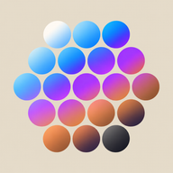
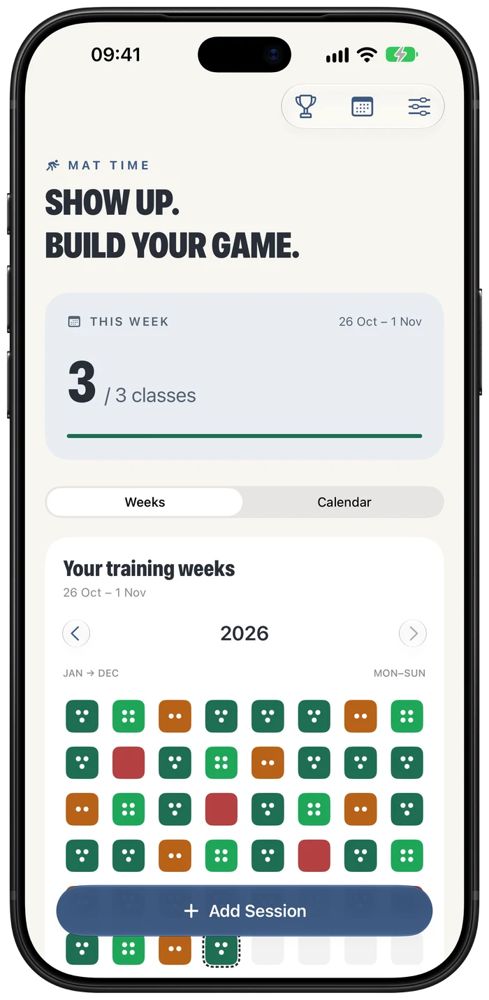
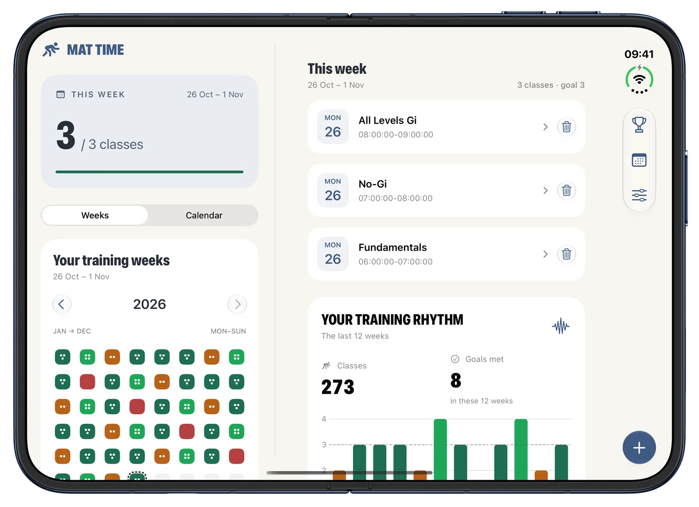
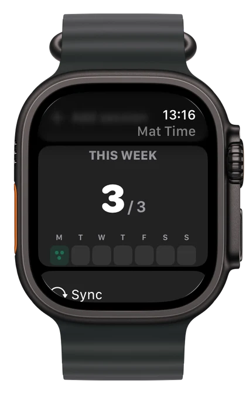

Less admin.
More training.
Add a class manually or quick add from your widget or Watch. Nearby scheduled classes supply the name and times.

MAT TIMETHE JIU JITSU TRAINING TRACKER
Show up. Log your class. See it add up.
Give your training a weekly target and a clear place to keep track. Every session counts, from your first roll to years on the mats.
iPhone · iPhone Duo · Apple Watch · Widgets



BUILD YOUR RHYTHM
A dot for every class. A colour for each week. See where you showed up and how your training builds over time.
Set a target that works for you. When life changes, update it. Earlier weeks keep the target you were working towards.
Monday to Sunday. Back-to-back classes welcome.
Add a class manually or quick add from your widget or Watch. Nearby scheduled classes supply the name and times.
Save the recurring classes you care about. Check what’s on and have session details ready when it’s time to log.
Unlock achievements for classes, consistency and early starts. Import your SJJA attendance history so past training counts too.
WHEREVER YOU LOG IT
Check your week on your wrist, add a session from your Home Screen or spread out on iPhone Duo.
Your weekly progress and quick add, right on your wrist. Sessions sync through your paired iPhone.
Keep your target in sight. The medium widget lets you add a session without opening the app.
Open up a wider view of your training, with attendance and details side by side.
Keep your attendance, targets, schedule and achievements in sync across your iCloud-connected installations.
MAT TIME SUPPORT
Start with the answers here. If something still isn’t right, get in touch.
Email support kemalenver+mattime@gmail.comFor a bug report, include your device, iOS or watchOS version, app version and what happened. Screenshots help. Please leave out personal training records unless they’re needed.
Tap Add session in the app, review the name, date and times, then save. Tap an existing class in the weekly list to edit it.
Quick add on the medium widget or Watch saves immediately. It uses a nearby scheduled class when one matches, otherwise it records “Quick Added Session” at the time you tapped.
Session start times must be at least 30 minutes apart. The check applies to manual entries, quick additions, edits and imports. End times do not affect it, so back-to-back classes are fine.
A week runs Monday to Sunday. Change your target in Settings. The new target applies from the current week onward; earlier weeks keep their saved targets.
In Weeks view, zero classes is red, below target is orange, meeting your target is green and going above it is brighter green. Future weeks and weeks before your first class stay neutral.
In Settings, choose Import SJJA attendance (.xls). Select the student and review the preview before importing. This expects an SJJA student attendance export, rather than a general Excel spreadsheet.
The same class won’t count twice if you import it again. Unsupported formats and conflicting session times show an error before anything is saved.
Check that both installations use the same iCloud account. Open Settings in Mat Time to see iCloud status. Sync can take a little time, especially on a new device, and resumes when connectivity is available.
Your Watch updates through its paired iPhone. Open Mat Time on your iPhone first. If a Watch session was added offline, it stays queued until your phone can confirm the save.
Yes. In Settings, choose Export training data (.json) and save it to Files. It includes attendance, your current and historical weekly targets, scheduled classes and earned achievements. Display preferences are excluded.
Keep this file somewhere safe. It can contain names and training history.
Email support with the exact message, your app version and device details. Avoid deleting the app while troubleshooting, as this can remove data stored only on that device.
YOUR RECORD OF THE WORK
Mat Time stores training data on your device and syncs through your private iCloud database when available. Your Watch connects through your paired iPhone. You can export a separate copy from Settings.
This website uses no analytics, tracking cookies or contact forms. Support links open your email app. Product images show example training data.